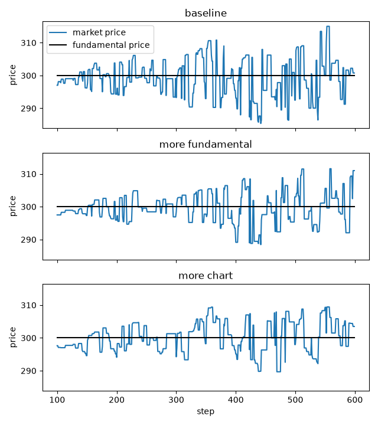

Fundamentalists, chartists and noise traders¶
This tutorial follows the Plham tutorial of the same model
(CI2002Main and its
use cases), which is based on Chiarella and Iori (2002).
It runs one market with 100 FCN agents and asks two questions: what happens to the market price when the agents
follow the fundamental price more, and what happens when they follow the trend more?
The complete script is tutorial_ci2002.py.
It needs matplotlib for the plot, which is not installed with PAMS
(pip install matplotlib).
The model¶
Each FCNAgent mixes three ways to predict the price.
The fundamental term expects the market price \(P_t\) to move back to the fundamental price
\(P^f_t\). The chart term expects the recent trend to go on. The noise term is a random guess.
The agent weights the three terms with \(w_F\), \(w_C\) and \(w_N\) and computes an expected return
(slightly simplified here; the exact formula is in the FCNAgent section of Agents)
where \(\tau\) is timeWindowSize, \(\tau_r\) is meanReversionTime and \(\sigma_N\) is
noiseScale.
If the expected price \(P_t \exp(\hat{r} \tau)\) is above the market price, the agent places a buy order
below the expected price. If it is below, the agent places a sell order above it. orderMargin sets how far
from the expected price the order is placed.
Each agent draws its own weights when the simulation is set up (see Random parameters (JsonRandom)).
A group with a larger mean fundamentalWeight behaves more like fundamentalists, and a group with a larger
mean chartWeight behaves more like chartists.
The configuration¶
The script uses the configuration of samples/CI2002 as a Python dict:
CONFIG: Dict[str, Any] = {
"simulation": {
"markets": ["Market"],
"agents": ["FCNAgents"],
"sessions": [
{
"sessionName": 0,
"iterationSteps": 100,
"withOrderPlacement": True,
"withOrderExecution": False,
"withPrint": True,
"highFrequencySubmitRate": 1.0,
},
{
"sessionName": 1,
"iterationSteps": 500,
"withOrderPlacement": True,
"withOrderExecution": True,
"withPrint": True,
},
],
},
"Market": {"class": "Market", "tickSize": 0.00001, "marketPrice": 300.0},
"FCNAgents": {
"class": "FCNAgent",
"numAgents": 100,
"markets": ["Market"],
"assetVolume": 50,
"cashAmount": 10000,
"fundamentalWeight": {"expon": [1.0]},
"chartWeight": {"expon": [0.0]},
"noiseWeight": {"expon": [1.0]},
"meanReversionTime": {"uniform": [50, 100]},
"noiseScale": 0.001,
"timeWindowSize": [100, 200],
"orderMargin": [0.0, 0.1],
},
}
It is the Minimal configuration of Quick start, which Running a simulation also uses, with three differences:
meanReversionTimesets \(\tau_r\), the time scale of the fundamental term. Each agent gets a value from 50 to 99 steps. Without it, \(\tau_r\) is the agent’stimeWindowSize(100 to 199 steps).The sessions are named
0and1, as in Plham, instead ofwarmupandmain.highFrequencySubmitRateof the first session has no effect: 1.0 is the default, and there are no high-frequency agents.
chartWeight is {"expon": [0.0]}, which is always 0. The agents of the sample are fundamentalists and
noise traders only.
The three cases¶
Each case changes some keys of the FCNAgents block:
CASES: Dict[str, Dict[str, Any]] = {
"baseline": {},
"more fundamental": {"fundamentalWeight": {"expon": [2.0]}},
"more chart": {"chartWeight": {"expon": [0.5]}},
}
baselineis the sample itself.more fundamentaldoubles the mean fundamental weight, from 1.0 to 2.0.more chartgives the agents a chart weight with mean 0.5.
Running the cases¶
make_config copies the configuration and changes the FCNAgents block, so CONFIG itself stays the
same. run_simulation runs one case with one seed:
def make_config(changes: Mapping[str, Any]) -> Dict[str, Any]:
"""Copy the configuration and change the settings of the FCN agents.
Args:
changes (Mapping[str, Any]): keys of the ``FCNAgents`` block and their new
values.
Returns:
Dict[str, Any]: the new configuration. ``CONFIG`` itself is not changed.
"""
config: Dict[str, Any] = copy.deepcopy(CONFIG)
config["FCNAgents"].update(copy.deepcopy(dict(changes)))
return config
def run_simulation(seed: int, changes: Mapping[str, Any]) -> SequentialRunner:
"""Run the simulation with changed FCN agents.
Args:
seed (int): seed of the random number generator.
changes (Mapping[str, Any]): keys of the ``FCNAgents`` block and their new
values.
Returns:
SequentialRunner: the runner after the run.
"""
runner = SequentialRunner(settings=make_config(changes), prng=random.Random(seed))
# hide the two time lines that main() prints
with contextlib.redirect_stdout(io.StringIO()):
runner.main()
return runner
The script measures how the market price moves around the fundamental price in the main session (steps 100 to 599):
def deviation_stats(runner: SequentialRunner) -> Dict[str, float]:
"""Measure how the market price moves around the fundamental price.
Args:
runner (SequentialRunner): the runner after the run.
Returns:
Dict[str, float]: for the main session, the standard deviation (``std``) and
the largest absolute value (``max``) of the market price minus the
fundamental price, the number of times the market price crosses the
fundamental price (``crosses``), and the number of shares traded
(``volume``).
"""
market = runner.simulator.name2market["Market"]
main_session = runner.simulator.sessions[1]
start = main_session.session_start_time
times = range(start, start + main_session.iteration_steps)
prices = market.get_market_prices(times=times)
fundamentals = market.get_fundamental_prices(times=times)
gaps: List[float] = [price - fp for price, fp in zip(prices, fundamentals)]
return {
"std": statistics.pstdev(gaps),
"max": max(abs(gap) for gap in gaps),
# a sign change of the gap between two steps is a cross
"crosses": sum(1 for a, b in zip(gaps, gaps[1:]) if a * b < 0),
"volume": sum(market.get_executed_volumes(times=times)),
}
stdandmaxshow how far the market price goes from the fundamental price.crossescounts how many times the market price passes the fundamental price. Fewer crosses mean that the price stays on one side for longer, that is, longer trends.volumeis the number of shares traded.
main() runs the three cases with the ten seeds 42 to 51. It prints the results of seed 42 and the mean over
the ten seeds, and plots seed 42.
Results¶
python tutorial_ci2002.py prints the two tables:
seed 42
case std max crosses volume
baseline 5.73 14.99 77.0 207.0
more fundamental 4.66 11.58 53.0 170.0
more chart 4.61 10.32 49.0 167.0
mean of seeds 42 to 51
case std max crosses volume
baseline 6.46 14.65 79.6 213.4
more fundamental 4.75 10.90 69.1 173.6
more chart 5.22 11.98 50.3 175.3
and saves ci2002_weights.png, the market price of seed 42 in the three cases:

Use the mean over the seeds to compare the cases. With seed 42 alone, more chart has a smaller std than
more fundamental, but not on average.
- More fundamentalists
The market price stays closer to the fundamental price:
stdfalls from 6.46 to 4.75 andmaxfrom 14.65 to 10.90. The agents pull the price back to 300 more strongly, so the price makes only small moves around it. This is the answer of the Plham tutorial too.- More chartists
crossesfalls from 79.6 to 50.3: once the price has moved away from the fundamental price, it stays on that side for longer, because the chart term expects the trend to go on. Plham also finds longer trends. In this setup, however,stddoes not grow: it falls from 6.46 to 5.22. A possible reason is in the formula: the weights are divided by their sum, so a chart weight also makes the noise term smaller.
In both cases, fewer shares are traded.
Try other values, for example a larger chartWeight or a smaller noiseWeight, and compare the tables.
Differences from Plham¶
PAMS and Plham use different random number generators, so the same configuration and seed give different prices.
The configuration on the Plham tutorial page has no
meanReversionTime, so its agents use theirtimeWindowSize(100 to 199 steps) as \(\tau_r\). The PAMS sample, like the sample of the current Plham, sets \(\tau_r\) to 50 to 99 steps. For the same gap between the market price and the fundamental price, the fundamental term is then about twice as large, so the pull toward the fundamental price is stronger than in the Plham tutorial.The Plham tutorial answers its questions with plots of the prices. This tutorial also measures how the market price moves around the fundamental price, and averages the numbers over ten seeds.
References¶
Chiarella, C. and Iori, G. (2002). A simulation analysis of the microstructure of double auction markets. Quantitative Finance, 2(5), 346–353. https://doi.org/10.1088/1469-7688/2/5/303